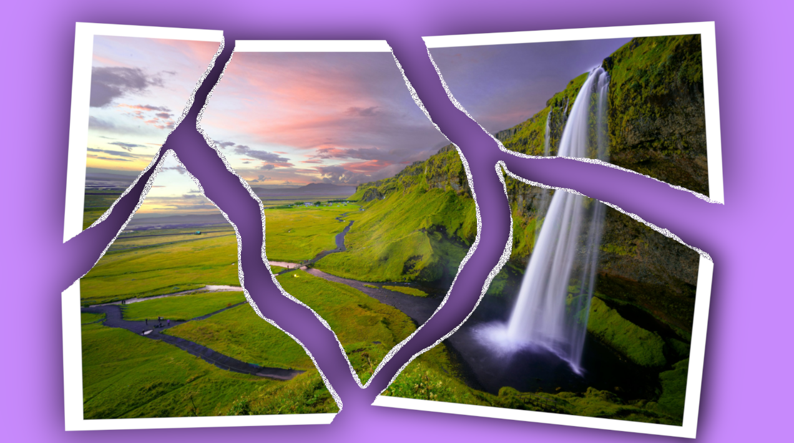
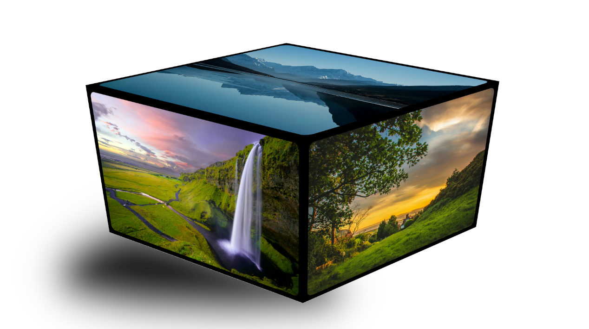
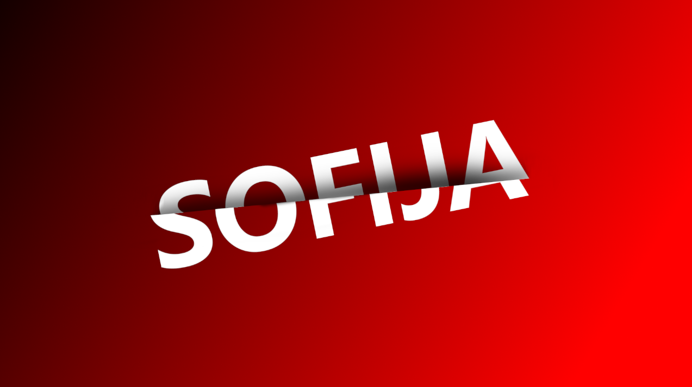
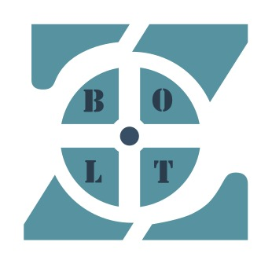
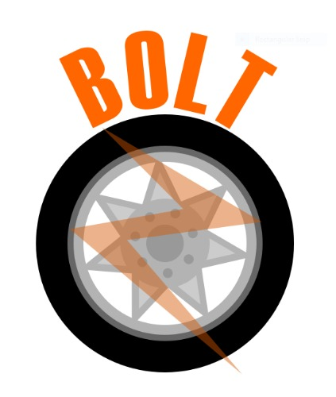
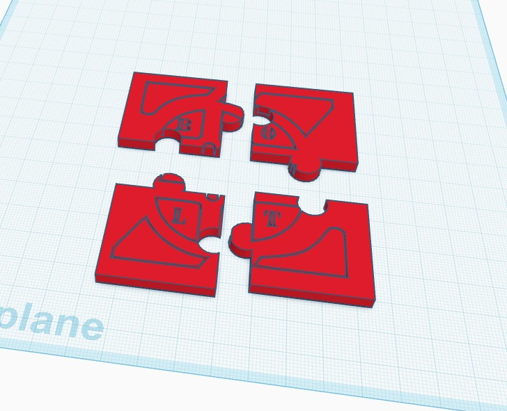
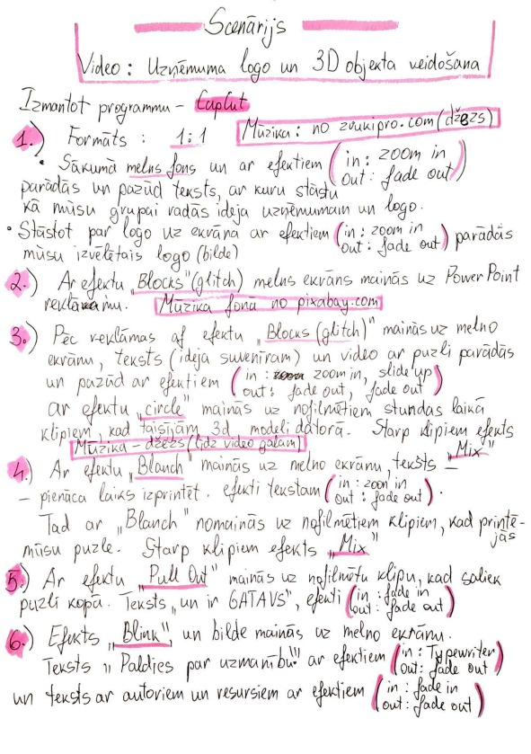

|  |  |  |
Mūsu puzlei bija jābūt reklāmas suvenīram, tāpec darbu mēs sākām ar biznesu un zīmējām tam logo. Biznesa nosaukums ir "BoltZ" un mēs ražojam energo efektīvas, dabai draudzīgas, ātras mašīnas. Katrs grupas dalībnies uzzimēja savu logo variantu, tad visi kopā izvēlējāmies labāku un piestrādājam to.
Mans variants izskatījās šādi, jo no angļu valodas Bolt ir zibēns, un es gribēju to attēlot mūsu logo burta Z vietā.
Pēc tam pienācis laiks strādat ar 3D logo variantu. mēs izmantojam programmu "Tinkercad". 
Visu šo laiku mēs filmējam puzles veidošanas procesu, un no šiem kadriem es izveidoju video.
